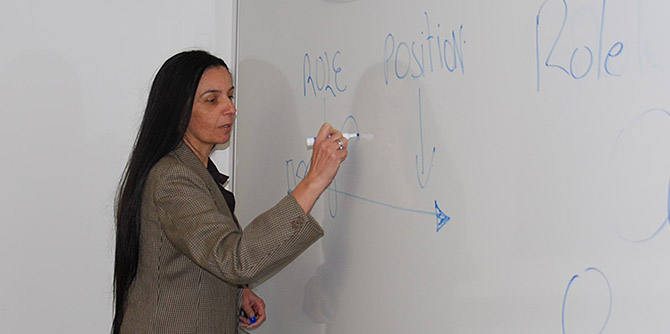

In the course of their studies at the Mandel School for Educational Leadership, fellows invest great efforts in developing their educational-social vision, and in thinking about the particular field in which they wish to create change. Afterward, throughout their professional lives, Mandel graduates are expected to pursue that vision, to continue refining it, and to effect change and make a difference wherever they may be.
At the same time, it is clear to the graduates themselves, and to the Mandel Graduate Unit that accompanies their professional development, that a vision is not a fixed concept, and that it must be dynamic and change. Over the years, graduates reach certain crossroads that force them to revisit and redefine their vision in order to decide what to do next.
The Mandel Graduate Unit’s “Transitions Workshop” was designed to address precisely such junctions. It creates a safe space in which graduates can re-examine their vision and their professional path. Comprised of four sessions, the workshop was held in November–December 2016, and was led by Shahar Bar Yehuda, a graduate of Cohort 17; Granit Almog-Bareket, the director of the Mandel Graduate Unit, who is a graduate of Cohort 14; and Rakefet Mossek, the consultations manager of the Mandel Graduate Unit.
Three graduates – from Cohorts 1, 3, and 9 – participated in the workshop. All of the participants already had years of practical experience, held several successful management positions, and were weighing their next steps.
As part of the structured process, which took place in a small, intimate group of graduates at a similar professional juncture, each participant clarified and redefined his or her personal vision. As part of the process, the participants gained an understanding of the barriers they faced and how to overcome them, mapped the field in which they wish to act, and identified the steps necessary to reach the goals they set for themselves. The group was an active partner in the process; its members provided feedback, facilitated mutual learning, and offered alternative perspectives.

{kind=link}